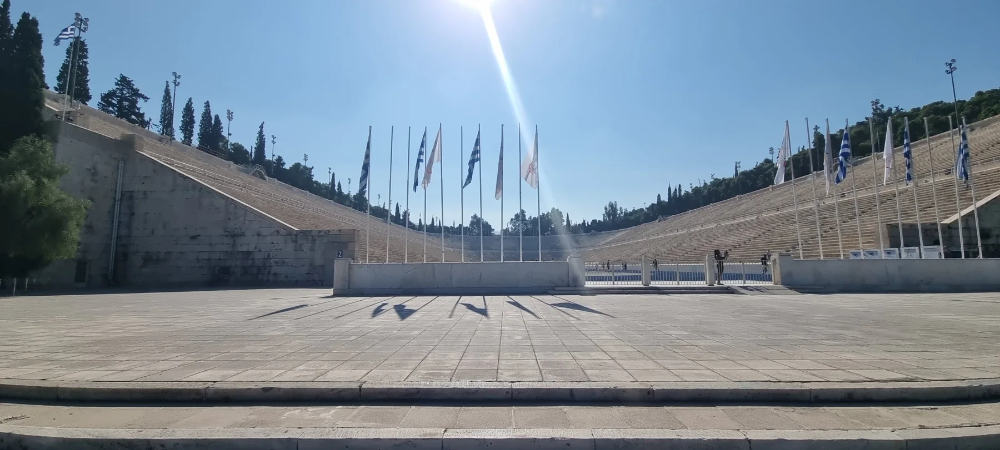

АФІНИ · МІЛОС · 8—17 ЖОВТНЯ
8–17 жовтня 2026 · 28 сторінок · 69 фотографій
КАРТА ПОДОРОЖІ
Не туристичний каталог, а коротка географія нашої хронології. Номери відповідають порядку появи місць у подорожі.
Натисніть номер на карті, щоб побачити місце, дату й коротку нотатку.
Лінії маршруту не нанесені: у доступних матеріалах немає GPS-треку, який дозволяв би чесно показати автомобільний шлях. Перемикання за днями підготовлене редакційно; точний денний маршрут потребує треку.
Карта: OpenStreetMap contributors · ODbL / атрибуція. OpenStreetMap — основа карти; поверх неї показані лише підтверджені місця з хронології.